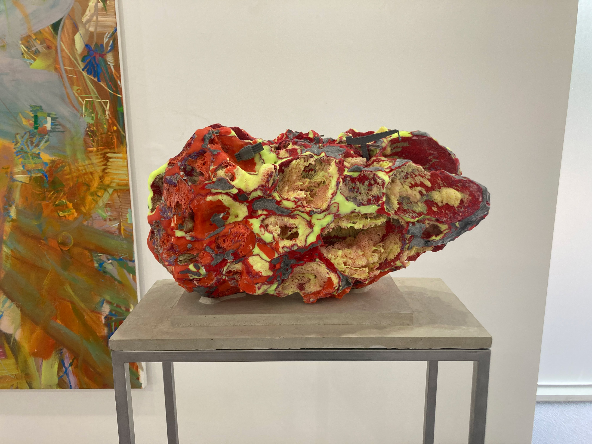
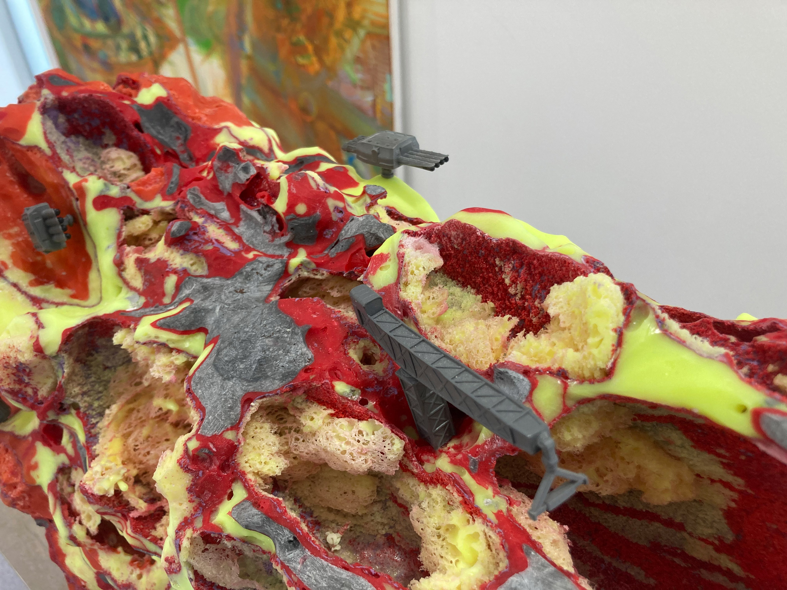

구멍이 숭숭 뚤려있는 작업들
<안녕하세요. 재훈. 오늘은 조금 일찍 메일을 보냅니다.
재훈이 먼저 보내주었던 Two Tu에 다녀왔어요.
주말이라 사람들이 정말 많이 왔다갔다 하더라구요.
날씨가 좋아 즐겁게 다녀왔습니다.
먼저 현남 작가의 조각에 대해 써보겠습니다.
현남의 조각은 처음 보았을 때 자연에서 발견되는 광물 혹은 운석 혹은 동굴 같은 이미지가 떠올랐습니다. 전시에 포함된 그 돌들은 앵무새들처럼 각자의 매력적인 색을 뽐내고 있어, 마치 돌을 수집하는 사람이 모아둔 컬렉션 같아 보이기도 했어요.
Whistle에 있는 조각들을 먼저 이야기하자면, 조각들이 좌대에 올라가 있었습니다. 그리고 자세히 들여다보면 자연물의 질감과 대비되는 약간은 우스운 장난감 같은 공산품들이 붙어 있었습니다. 미니어쳐나 조화 같은 것들이 붙어 있었어요.
이런 공산품들을 왜 포함시켰을까. 하고 궁금했는데요.
자연물 같아 보이는 딱딱한 조각을 좌대에 올리는 전통적인 선택이 주는 진지함을 중화시키는 장치 같다는 생각이 들었습니다.
P21에 있는 작업들은 플라스틱 체인에 작업들이 걸려있었는데요.
그런 선택으로 설치된 작업들에는 이러한 공산품들이 붙어있는 대신, 구멍의 안쪽으로 못이 들어있었습니다.
못을 품은 조각은 귀여운 인상이 전혀 없었어요.
대신 형광빛 플라스틱 체인에 걸려 있었기 때문에, 힙하다는 인상이 들었습니다.
(이 힙하다는 표현을 어떻게 구체화시켜서 이야기할 수 있을지 조금 고민해봐야겠어요..)
카라비너와 체인에 걸려 있는 것을 보면서 처음 들었던 생각은 이 조각의 구조가 생각보다 단단하다는 것이었습니다.
whistle에서 조각을 보았을 때는 저 구멍과 구멍들이 만들어내는 표면의 얇은 부분들이 손대면 부서질 것 같이 연약해보였습니다.
하지만 체인에 걸려 있는 것을 보며 스스로의 무게를 충분히 지탱할 정도로 단단한 조각이라는 것을 증명하고 있는 것 같이 보였습니다.
조각이 품고 있는 요소의 다름과 설치 방식의 다름이 같은 방법으로 만들어진 조각을 반복해봄에도 흥미롭게 볼 수 있게 해준 것 같아요.
그리고 가장 안쪽에 있는 조각이 가장 강렬한 인상을 남겼습니다.
두꺼운 못 같은 것으로 무수히 찌른 흔적을 눈으로 따라가면서 구조를 관찰할 수 있었습니다.
다음에는 어떤 작업을 보여줄 지 기대를 품게 하는 작업이었어요.
저는 현남 작가의 이전 두 전시(형, 에르메스)를 모두 가보지 못했는데, 이전 전시들을 보고 지금 전시를 봤다면 더 재미있게 볼 수 있었을 것 같습니다.
다음에는 성시경 작가의 회화에 대해서 써보겠습니다.
곧 보아요!
고마워요. 손 드림
시원하게 지나가는 낙서
이손
2022.04.29